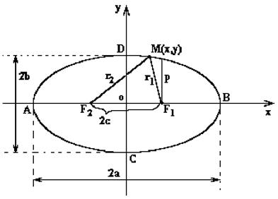
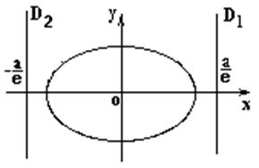

6.1 Эллипс
Эллипс - геометрическое место всех точек  , для которых сумма расстояний до
двух заданных точек
, для которых сумма расстояний до
двух заданных точек  и
и  (называемых
фокусами эллипса) постоянна и равна
(называемых
фокусами эллипса) постоянна и равна  ,().
,().
, для которых сумма расстояний до
двух заданных точек и (называемых
фокусами эллипса) постоянна и равна ,(). и

Элементы эллипса
- точка
 – центр;
– центр; - точки – вершины;
- точки , – фокусы;
 – фокусное расстояние;
– фокусное расстояние; и
и  – большая и малая
оси;
– большая и малая
оси;  и
и  – большая и малая
полуоси;
– большая и малая
полуоси;-
Эксцентриситет
эллипса, при совпадении его осей с координатными осями
– эксцентриситет эллипса
(чем больше
 , тем более вытянут
эллипс вдоль большой оси),
, тем более вытянут
эллипс вдоль большой оси), -
 Фокальный параметр
эллипса
– фокальный параметр (половина
хорды, проведённой через фокус параллельно малой оси).
Фокальный параметр
эллипса
– фокальный параметр (половина
хорды, проведённой через фокус параллельно малой оси). -
 Уравнение правой и
левой директрис эллипса
– уравнения правой и левой директрис;
Уравнение правой и
левой директрис эллипса
– уравнения правой и левой директрис;

Каноническое уравнение эллипса
 Каноническое уравнение эллипса
Каноническое уравнение эллипса
Параметрические уравнения эллипса
Параметрическое
уравнение эллипса
–
параметрические уравнения эллипса, где  –
параметр, ;
–
параметр, ;
–
параметр, ;( – угол, образованный
подвижным радиусом с положительным направлением оси  );
);
– угол, образованный
подвижным радиусом с положительным направлением оси );Уравнение эллипса в полярных координатах
 Уравнение эллипса в
полярных координатах
–
уравнение эллипса в полярных координатах, связанных с фокусом.
Уравнение эллипса в
полярных координатах
–
уравнение эллипса в полярных координатах, связанных с фокусом.